1952年秋的一天，即我携妻子弗吉尼娅到普林斯顿高等研究院作为期两年的访问研究后不久，我们驱车沿一条古老的小路赶往研究院。此时，两个正在漫步的怪人不知不觉走到了我们车前，并挡住了我们的去路。其中高一点的那个男人穿得甚是邋遢，而另一个则着一身很合体的西服，夹着一个公文包。当我小心地驾车经过他们时，我们认出了那是阿尔伯特·爱因斯坦和库尔特·哥德尔。“爱因斯坦和他的律师。”弗吉尼娅笑道。
这对好朋友不仅仅是在衣着上有所不同。1952年的总统大选过后，爱因斯坦曾断言：“哥德尔是完全疯了……他竟然把票投给了艾森豪威尔。”1对于自由主义者爱因斯坦来说，把票投给共和党人简直是不可想象的。他们两人对许多基本哲学问题的看法也相去甚远。在提出狭义相对论的过程中，爱因斯坦深受恩斯特·马赫怀疑论的实证主义的影响，尤其是马赫对康德先验时空观的批判。康德的学说认为，我们关于时间和空间（尽管是客观的）的观念是独立于经验观察的。哥德尔在青年时就开始阅读康德的著作，而且终生都保持对德国古典哲学家（尤其是莱布尼茨）的著作的浓厚兴趣。事实上，在一份尚未发表的哥德尔的遗稿中，他认为相对论如果被恰当理解，就可以被看作是证实了康德关于时间本性的某些观点。2与弗雷格和康托尔对实证主义的局限性的不满相呼应，哥德尔承认，正是通过拒斥那些思想，他才有可能看到被其他逻辑学家所忽视的联系，并且做出那些伟大的发现。3
在哥德尔1978年去世之后，一个哥德尔协会在维也纳成立了。该协会致力于逻辑以及计算机科学的相关领域中的研究，并且定期在维也纳举行会议。1993年8月，协会在捷克共和国的布尔诺召开会议，纪念哥德尔诞辰87周年。除了既定的科学议程之外，这次会议还特地举行了一个纪念仪式，由布尔诺的市政要人在哥德尔童年时的故居安放纪念牌匾。我仍清楚地记得那时的情景：我们打着伞，站在初秋时节略有些寒意的细雨中；开始是一些捷克语的演讲，随后，一支身着色彩艳丽的民族服装的乐队演奏了几首曲子。
1906年，库尔特·哥德尔出生于布尔诺。那时的布尔诺仍是奥匈帝国的一部分。由于某种原因，伯特兰·罗素一直认为哥德尔是犹太人。事实上，他母亲一家都是新教徒，而他的父亲则在名义上是天主教徒，不过他们平时都很少去教堂。哥德尔一直在德语学校读书，他早年的学业情况被极为完整地保留下来了，这得益于他那一丝不苟的习惯和保存旧物的爱好。从成绩单可知，他在所有的科目中都获得了高分，而他的作业本则显示出当时课程的繁重。8岁那年，哥德尔患了急性风湿热，这次患病并没有留下什么身体上的后遗症。但此后哥德尔就有了疑病症倾向，这很可能就是此次患病的后果。他的哥哥鲁道夫曾说：当库尔特·哥德尔还是个孩子时，就表现出了一些精神不稳定的迹象。4
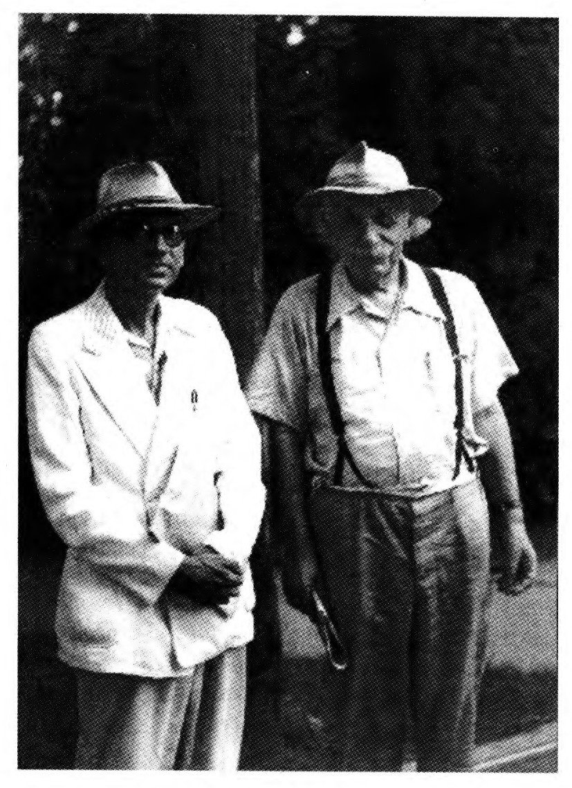
（Richard Arens）
第一次世界大战后奥匈帝国解体，在新成立的捷克斯洛伐克共和国，操德语的人群变成了少数民族。哥德尔一家发觉这正是他们所处的境况。维也纳坐落在布尔诺南面的108千米处，那里是德语区，有着相当好的大学。于是，鲁道夫和哥德尔很快就决定去那里求学。在以近乎完美的成绩结束了在布尔诺的中学学习之后，哥德尔于1924年秋去了维也纳。在此之前，鲁道夫已经作为一个医科学生到了那里。现在，他们两人可以同居一室了。虽然哥德尔最初打算学习物理学，但在听了一些数论课程之后，整数中所蕴含的那种样式之美使他意识到，数学才是自己真正的追求。
奥地利共和国建立在一战后奥匈帝国的废墟之上，但仅仅过了20年，它就在1938年被纳粹德国吞并了。那是一个混乱喧嚣的年代，这个国家经常游离于内战的边缘。社会民主党的“红色”维也纳与极度保守的乡村之间的冲突一触即发。正是在这种甚嚣尘上的气氛中，著名的维也纳学派生长繁荣起来。维特根斯坦和罗素的工作已经为数学发展出了一种人工语言，它可以将定理的证明表示成纯符号的形式演算。维也纳学派成立于1924年，它由一群哲学家和科学家组成，他们继承了马赫和亥姆霍茨的经验论-实证论传统。我们在第四章中曾经提到，康托尔和弗雷格曾经严厉地抨击过这些思想。维也纳学派对传统的形而上学深恶痛绝，他们深信，哲学的一个主要目的就是发展出类似于怀特海-罗素那样的符号系统，并对其进行研究，这些系统不仅可以包含数学，而且也可以包含经验科学。1936年，该学派的创始人莫里茨·石里克被他以前的一个疯狂的学生枪杀，而纳粹则因莫里茨·石里克可能的左翼立场而宣称该谋杀是正当的。维也纳学派的另一些主要人物还有鲁道夫·卡尔纳普和汉斯·哈恩。鲁道夫·卡尔纳普曾师从弗雷格，汉斯·哈恩则会成为哥德尔的首席教师。25
当伯特兰·罗素关于数学基础的思想在三大卷《数学原理》中具体成型时，他的学生，那个才华横溢而又富于狂想的维特根斯坦也因那本薄薄的只有75页的《逻辑哲学论》而为世人所知。这两位哲学家的思想在维也纳学派举行的讨论会上扮演着重要的角色。1926年，经汉斯·哈恩的引荐，哥德尔开始参加这些讨论会，他发觉自己对于所讨论的内容并没有多大兴趣。但即便如此，罗素所阐述的全部的数学都可以用一个形式逻辑系统来表示，以及维特根斯坦所强调的在语言内言说语言的问题，这些肯定影响了年轻的哥德尔的研究方向。维特根斯坦所关注的这些东西与希尔伯特的立场相当一致，他们都认为形式逻辑系统不仅可以在系统内部表达数学推理，而且还可以从系统外部用数学方法加以研究。
在希尔伯特在哥廷根所教授的逻辑课程中，他所采用的逻辑演绎的基本规则源自弗雷格的《概念文字》以及怀特海与罗素合著的《数学原理》。在他1928年的逻辑教科书中（与他的学生威廉·阿克曼合著），希尔伯特提出了在这些规则之间是否存在间隙的问题，也就是说，演绎推理应当是正确的，但规则本身却并不足以保证从前提能够得出结论。他相信并不存在这样的间隙，但他要求对规则本身是完备的进行证明。哥德尔选择了这个问题作博士论文。虽然他很快就得到了希尔伯特所想要的结果，但这其中却不乏反讽的意味。哥德尔所运用的技巧是当时的逻辑学家们相当熟悉的，但为什么他们没有得出这一成果呢？由于布劳威尔-外尔的责难，再加上希尔伯特在元数学的研究中默许了这些责难，这些都影响了他们，束缚住了他们的手脚。我们很快就会看到这一点。
逻辑演绎是从前提到结论的过程。当我们使用弗雷格-罗素-希尔伯特的符号逻辑时，每一个前提和结论皆由一个逻辑公式来表示，也就是相当于一个符号串。5这些符号中有些表示纯粹的逻辑概念，有些只是标点符号，还有一些则是指相关的特定主题。下面是一个逻辑推理的例子：其中前两行是前提，第三行则是结论。
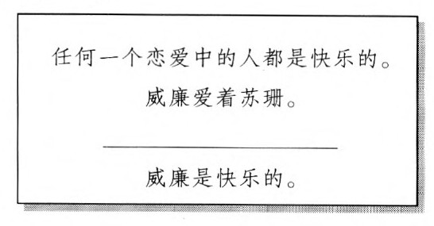
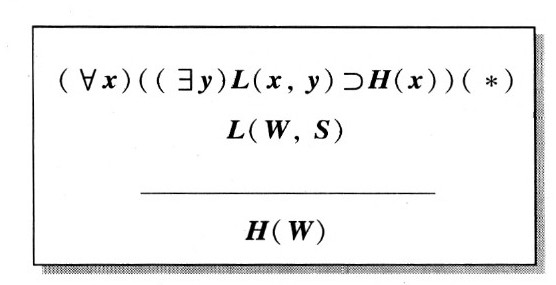
运用第三章所介绍的逻辑符号系统，我们可以把它翻译成逻辑语言：
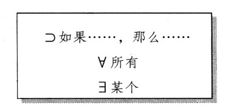
字母х，y是变元，它们（就像代词一样）表示被考察人群中的任一个体，而其他符号L,W，н和S所具有的含义则与特定的主题相关。如下所示：
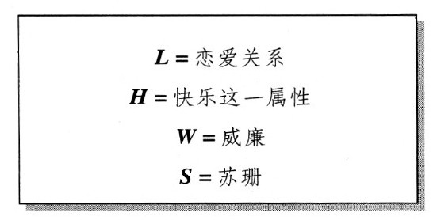
由此我们可以把这一推理表示成如下形式：
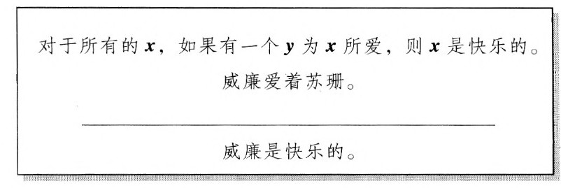
说这个推理是有效的就意味着，无论我们所选择的这些个体所处的群体是什么，无论用字母L表示这些个体间的什么关系，无论用字母н表示这些个体所具有的什么属性，以及无论选择把哪些特定的个体指定给字母W和S，只要我们在推理时保证两个前提皆为真陈述，那么结论就必然为真。为了进一步阐明什么叫做一个推理是有效的，我们不妨用一种完全不同的主题对前面的符号推理做出解释：
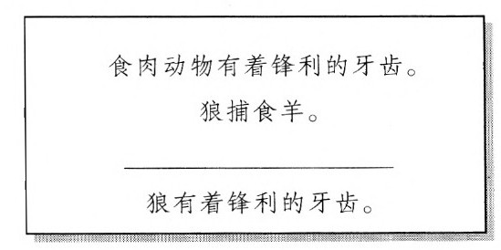
为了说明这个例子也可以用前面的符号推理（*）来表示，我们可以用变元x,y来表示哺乳动物的任意种类，并对其他字母作如下解释：
L=物种之间的捕食关系
н=有锋利的牙齿这一属性
w=狼
S=羊
于是，这一符号推理就可以表示为：
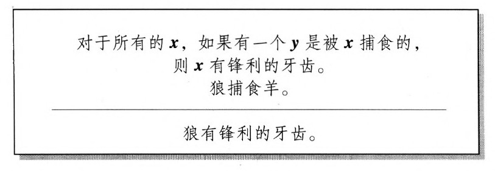
以上解释了推理是有效的是什么含义。希尔伯特希望证明，任何一个有效的推理都可以用弗雷格-罗素-希尔伯特的规则从前提到结论逐步得到证明。换句话说，希尔伯特期望这样一种证明：如果一个推理具有如下属性，不论对公式中的字母作何种解释，只要其前提是真陈述，则它的结论就是真的。
那么我们就可以用弗雷格一罗素一希尔伯特的规则从前提推演出结论。哥德尔在其博士论文中成功地给出了希尔伯特所期望的证明。
哥德尔对自己的证明的解释是直接而又清楚的，这成了他后来所发表的作品的特色。然而，尽管这项重要性随着时间流逝而日趋明显的成果给人以深刻的印象，但他所使用的方法却并没有什么新颖之处，当时的逻辑学家对此都很熟悉。这就使人好奇希尔伯特、阿克曼和贝尔奈斯所组成的强大团队为什么就不能得出这样一个证明。的确，哥德尔在许多年之后评论说，这条定理是挪威逻辑学家特拉尔夫·司寇伦1922年所写的论文的结果的“近乎平凡的推论”。司寇伦的论文比哥德尔的博士论文早了6年（不过哥德尔和哈恩可能都未读过它）。在一封写于1967年的信中，哥德尔回忆起20年代，他谈到“当时逻辑学家的盲目……的确很令人奇怪。”不过他又接着说道：
随着布劳威尔-外尔对非有限性推理提出批评（前面的章节已经讨论过），以及希尔伯特规定在他的元数学中只允许有限性推理，从外部对形式逻辑系统进行研究必须严格限于有限性方法，这至少已经得到了默认，布劳威尔不可能拒绝此种方法。7然而事实上，哥德尔的完备性定理如果不使用非有限性方法就不可能获证。在没有与希尔伯特纲领的目标及其方法论限制相左的情况下，哥德尔解释了为什么非有限性方法在这种情况下可以被允许：
因此，当哥德尔接受希尔伯特在数学研究中所加的有限性方法的限制以确保数学基础的稳固时，他发现在数理逻辑的工作中没有必要给自己穿上这样一件紧身衣，它并不是这项工作的一部分。
在希尔伯特于1900年所列的著名问题中，第二个问题是对实数算术的一致性进行证明。当时，没有人知道这样一个证明会是什么样子，特别是不知道它如何才能摆脱循环论证，也就是说，如何在证明中避免用到证明所要捍卫的方法。就像我们在前面的章节中所看到的那样，希尔伯特在20世纪20年代介绍了他的元数学纲领：一致性有待证明的公理将被包含在一个形式逻辑系统之内，而证明仅仅是有限数目的符号的一种排列而已。接着，证明这个系统的无矛盾性就要用到希尔伯特所说的有限性方法，该方法甚至比布劳威尔愿意接受的还要严格。当哥德尔完成了他的博士论文转而研究这些问题时，希尔伯特纲领的胜利似乎遥遥在望。
1928年，希尔伯特曾在波伦亚所举行的国际数学家大会上谈到了这个系统，今天该系统被称为皮亚诺算术（PA），它包含了关于自然数1，2，3，……的基本理论。当哥德尔开始思考希尔伯特纲领时，希尔伯特的学生阿克曼和冯·诺伊曼似乎正朝着用有限性方法证明PA的一致性的方向大步迈进。他们二人都已经为PA的一个有限的子系统找到了这样的证明。如此看来，只要克服一些技术上的困难，成功将指日可待。哥德尔本人很可能也持这种看法。无论如何，他决定去证明那些较之PA更强的系统的一致性。由于已经有了一些重要的关于相对一致性的证明，所以这是一个很自然的想法。哥德尔曾经希望用有限性方法把这种可以包含实数算术的更强的系统的一致性还原为PA的一致性。这在很大程度上是在遵循希尔伯特的路线：希尔伯特曾经把欧几里得几何的一致性还原为实数算术的一致性，现在哥德尔希望把这种还原继续进行下去。如果哥德尔成功了，那么希尔伯特的追随者们对PA的一致性的证明就将自动为实数算术的一致性提供证明，这样就满足了希尔伯特在1900年提出的第二个问题的要求。然而这是做不到的。哥德尔不仅在这项努力中失败了，他还证明了他是不可能成功的。最终，他非但没能像他曾经希望地那样去抵挡布劳威尔-外尔的批评来帮助保卫数学，反而有力地葬送了希尔伯特纲领。
当哥德尔开始思考这些问题时，他重新思考了从外部而不是从内部考察一个形式逻辑系统的意思。罗素和怀特海已经相当令人信服地表明，所有的普通数学都可以在这样一个系统内部发展出来。希尔伯特在他的元数学中试图运用严格受限的数学方法去从外部研究这样的系统。那么，为什么元数学自身不能在一个形式逻辑系统内部发展出来呢？从外部看，这些系统包含着符号串之间的关系。从内部看，这些系统能够表达关于不同数学对象（比如自然数）的命题。而且，用自然数来为符号串编码并不困难。啊哈！通过使用这样的代码，外部就可以被带到内部了。为了说明这些代码的用处，让我们再来看看“任何一个恋爱中的人都是快乐的”这个前提是如何被符号化的：
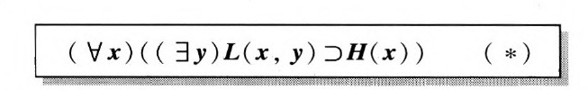
我们这里所有的只是10个符号的一个排列或串，这10个符号是：
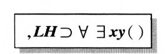
我们可以采用一种简单的编码方案，其中每一个符号都被一个十进制的阿拉伯数字所替代，例如：
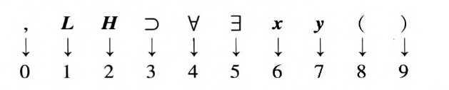
对于（*），用上面所示的数字代替那些符号，我们便得到了码数
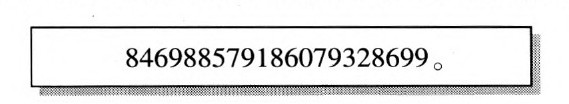
请注意，不仅从符号串到数字的编码是容易的，反过来也同样容易。当然，如果符号超过了10个，我们就必须使用一种不同的编码方式，但这并不会带来什么困难。例如，倘若给每一个符号配上两个十进位的数字，那么我们就可以为多达100个的符号编码。从本质上讲，同样的方法可以被用于任何形式逻辑系统。因此，各种不同的这种系统（所有这些系统从外部看都呈现为符号串）都可以用自然数来编码。9
如何在那些极其相似的系统中用代码去发展出形式逻辑系统的元数学，这对哥德尔来说是不成问题的。但在实际过程中，根据维也纳学派内部广为传播的那些律令，他发现自己的想法是被严格禁止的。哥德尔发现存在着这样的命题，它们从系统外部看是真命题，但却无法在系统内部获得证明。在维也纳学派的许多支持者看来，除了可证明性，数学真理的任何其他观念都是无意义的，都只是唯心论形而上学的怪胎。哥德尔没有受这些信念影响，他得到了一个完全相反的非凡结论：一种有意义的数学真理的观念不仅是存在的，而且其范围还超出了任何给定的形式系统的证明能力。从像PA那样的相对较弱的系统到怀特海和罗素的《数学原理》（PM）那样的囊括了全部古典数学的系统，这个结论适用于相当广泛的形式逻辑系统。在哥德尔1931年发表的那篇卓越的论文——“论《数学原理》及有关系统的形式不可判定命题”中，他选择对形式系统PM给出了他的结果，从而说明即使强逻辑系统也不可能把全部数学真理包含在内。10
在哥德尔的证明中，关键的一步在于他证明了：一个自然数作为PM中可证命题的一个代码，这一性质本身可以在PM中表示出来。根据这一事实，哥德尔可以在PM中构造出一些命题，在那些已经获知特殊编码的人看来，这些命题可以被看作表达了这样一个断言，即某些命题在PM中是不可证的。也就是说，他能够构造出这样一个命题A，该命题经译码后，可以断言某一命题B在PM中是不可证的。现在，在那些没有获知密码的人看来，命题A只不过是一串符号而已，它表示某个关于自然数的复杂而神秘的命题。但是通过代码，神秘性便消失了：A表示这样一个命题，即某个符号串B表示一个在PM中不可证的命题。A和B通常是不同的命题。哥德尔问，它们是否有可能是相同的呢？事实上，它们可以是相同的。哥德尔能够用他从格奥尔格·康托尔那里学到的一种数学技巧——对角线方法来证明这个结论。运用这种技巧，我们可以使被断言为不可证的命题和那个作出这一断言的命题是同一个命题。换句话说，哥德尔发现了如何获得这样一个非凡的命题，我们将称之为U，它有如下性质：
·U说某个特殊的命题在PM中不可证。
·那个特殊的命题就是U本身。
·因此，U说：“U在PM中不可证。”
在维也纳学派内部，人们普遍认为，对于一个类似于PM的系统中所表达的命题来说，命题为“真”的意义就是它根据该系统的规则是可证的。命题U的上述性质使得这一信念不再能够成立了。如果我们承认PM不会撒谎，也就是说在PM中证明的任何命题都是真的，11那么我们就发现U是真的，但它在PM中不可证。如下所示：
1.U是真的。假定它是假的，那么它所表述的内容就是假的，因此它就不是不可证的，而一定是可证的，从而是真的。这就与开始的假定即U是假的相矛盾了。所以它一定是真的。
2.U在PM中是不可证的。既然它是真的，那么它所表述的内容必定为真，所以它在PM中不可证。
3.U的否定（记作？U）在PM中不可证。因为U是真的，U必定为假，从而在PM中也不可证。
U具有这样的性质：它和它的否定在PM中都不可证。为了强调这种性质，我们把U称为不可判定命题。但这也不能强调得太过分，因为这种不可判定性只与系统内部的可证性相关。从我们外部的观点来看，U显然是真的。12
现在这里出现了一个难题：我们知道U是真的，尽管它在PM中不可证。既然PM包含了所有的普通数学，那么U为真为什么在PM内部不可证？哥德尔认识到这差一点就是可能的了，但这里存在着一个意想不到的障碍。在PM内部，我们可以证明：
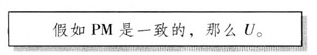
因此，正是PM是一致的这一额外假定，才使U在PM内部得不到证明。既然我们知道U在PM内部是不可证的，我们就必须得出结论说，PM的一致性在PM中不可证。然而，希尔伯特纲领的主要目的就在于：用被认为仅仅构成PM的一个非常有限的子集的有限性方法来证明像PM这样的系统的一致性。然而哥德尔却证明了，即使就PM的全部能力而言，它也不足以证明其自身的一致性。因此，至少如最初所设想的那样，希尔伯特纲领走到了尽头！13
今天，我们知道有这样一种实际的物理装置，它的功能相当于一个通用的信息处理可编程计算机。但在1930年，实现这一切还要再等几十年。不过，那些熟悉现代程序设计语言的人只要看一下哥德尔在那年写的关于不可判定性的论文，就会看到一连串45个编了号的公式，它们看起来非常像一个计算机程序。这种相似决非偶然。哥德尔曾经证明，作为PM中的一个证明的代码，这种性质是可以在PM内部表示出来的。在证明的过程中，哥德尔不得不解决许多问题，这些问题与那些在设计程序语言和用这些语言编写程序时所面临的问题是相同的。在最基础的层次上，当代的计算机仅能通过由0和1所组成的一些短的字符串来执行简单的基本运算。那些所谓高级程序语言的设计师们面临着这样的任务，他们要向程序员们提供可以包含非常复杂的运算的语句，而且还得使这些程序员们喜欢用它。要想让用这些语句所写出的程序被一台计算机执行，它们就必须被翻译成机器语言——翻译成执行它们所需的详细的基本运算清单。此项工作由特殊的翻译程序来完成，它被称为解释程序或者编译程序。26
在哥德尔对不可判定命题的存在性的证明中，其重点在于这一事实，即在PM中的可证明性可以在PM内部表示出来。哥德尔非常清楚自己要把这一革命性的结果提交给一群极富怀疑精神的读者，他希望能够消除任何疑虑。于是他就面临着这样一个问题，即把与PM的公理和推理规则相对应的字符串的代码的复杂运算分解开来，并把它们转化成用PM的符号语言所写成的表达式。为了解决这个问题，哥德尔实际上创造了一种特殊的语言，通过这种语言，所需的运算就可以被一步步地表示出来。14每一步都是由一种对数的运算的定义组成的，经过哥德尔所使用的代码的转换，这种运算与PM表达式的一种平行的运算相对应。这些定义利用了在前面的步骤中已经定义过的项，由哥德尔的特殊语言表达出来。这样设计这种特殊的语言，就可以保证通过这样一种定义而被引入的运算能够在PM内部被恰当地表示出来。
莱布尼茨曾经建议发明这样一种精确的人工语言，能够把人类的大多数思想还原为计算。弗雷格在其《概念文字》中说明了如何能够把握数学家们通常使用的逻辑推理。怀特海和罗素用一种人工逻辑语言成功地发展出了实际的数学。希尔伯特已经建议对这些语言进行元数学的研究。但在哥德尔以前，没有人能够说明如何才能把这些元数学的概念植入这些语言本身。15
除了构造出一个不可判定命题U以外，哥德尔还希望证明该命题的陈述并不需要异乎寻常的数学概念。为此，哥德尔使用了基本数论中的一个定理——中国剩余定理。通过该定理，哥德尔说明了所有能够用他的特殊语言表示出来的运算如何能够用自然数算术的基本语言表示出来。16由此可知，不可判定命题U本身也可以用这种基本语言表示出来。这就意味着，U可以用这样一个词汇表写出来，组成这个词汇表的变量的值只能是任何自然数、算术运算+和x、“=”以及弗雷格逻辑中的基本运算。这里的非凡结论是，即使是局限于这个如此贫乏的词汇表，在PM内部不可判定的命题也可以被构造出来。
1930年8月26日，在维也纳的议会咖啡馆，年仅24岁的库尔特·哥德尔正在与鲁道夫·卡尔纳普谈论着10天后将要在柯尼斯堡召开的“精密科学的认识论会议”。卡尔纳普当时近40岁，他是维也纳学派的领军人物。按照安排，他将发表一个关于数学基础的逻辑主义纲领的演讲，这个纲领在怀特海和罗素的《数学原理》中得到了最充分的体现。卡尔纳普的笔记表明，哥德尔已经把自己的重大发现告诉了他，即《数学原理》中存在着关于自然数的不可判定命题。这两个逻辑学家（以及其他与会者）一起去了柯尼斯堡。会议的第一天共有三个关于数学基础的讲演，每一个都持续1小时。卡尔纳普以逻辑主义为主题开始了他的演讲，异乎寻常的是，他在演讲中只字未提哥德尔的新结果。随后是布劳威尔的一个学生海丁的报告，他讲的是布劳威尔的直觉主义。当天的最后一个讲演是冯·诺依曼作的，他所讲的主题是希尔伯特纲领。17
第二天又有三个1小时的演讲，除此之外还有三个20分钟的发言，其中的一个发言是哥德尔作的，主题是他的博士论文，即弗雷格的规则的完备性。会议的第三天有一个关于数学基础的圆桌会议。在会上，哥德尔向众人宣布了他那个惊人的发现。他用了相当长的时间试探性地讨论了从类似PM这样一个系统的一致性证明中可以得到什么。他断言，即使已经知道这样一个系统是一致的，我们也完全有可能在该系统内部证明一个关于自然数的命题，该命题从系统的外部看是假的。因此，一个形式系统的一致性不足以保证在该系统内被证明的命题是正确的。冯·诺伊曼对此表示了赞许，这显然激励哥德尔继续走了下去。哥德尔进而宣称，如果假定像PM这样的系统的一致性，“我们甚至能够给出一些有着简单算术形式的命题的例子”，它们是真的，但在这样一个系统中却是不可证的。“因此”，他继续说道，“假如把这样一个命题的否定加入”PM，那么我们就可以得到一个一致的系统，但在该系统中有一个假命题是可证的。18
冯·诺伊曼似乎立刻就理解了哥德尔的工作的意义，他在会议结束时找哥德尔进行了一次讨论。没有任何迹象表明还有其他人认识到发生了什么。冯·诺伊曼继续思考这一问题，他确信（原因已在上文解释过了）从哥德尔的结果可以得出一致性本身是不可证的，并进一步断定这就宣告了希尔伯特纲领的失败。当冯·诺伊曼写信告诉哥德尔这个信息时，哥德尔已将自己含有同一结论的论文拿去发表了。哥德尔立即作复，还寄上了他的文章的预印本。冯·诺伊曼回信感谢了哥德尔，并且不无沮丧地说：“既然您所建立的一致性的不可证性是您早期的结果的自然延续和深化，那么我当然不会就该主题发表什么了。”19逻辑和数学基础曾经是冯·诺伊曼的主要兴趣之一。他成了哥德尔的一个好朋友，曾就哥德尔的工作做了多次演讲，并且称赞哥德尔是自亚里士多德之后最伟大的逻辑学家。20但他自己却终止了逻辑方面的工作。当他10多年后重新对逻辑有了兴趣时，他对逻辑的兴趣体现在了硬件上：通用数字计算机。
冯·诺伊曼后来与计算机打交道时的一个合作者曾经讲过这样一个有趣的故事，冯·诺伊曼常常谈起他证明算术一致性的努力：
冯·诺伊曼打趣地说，如果他能在第三个夜里梦它，事情就会是另一种样子了！21
哥德尔公布他的惊人发现的那次会议并不是那一周在柯尼斯堡所举行的主要活动，主要活动是德国科学家和医生协会在柯尼斯堡举行的大会。在圆桌会议的第二天，大卫·希尔伯特就发表了开幕演说。正是在这里，希尔伯特明确地喊出了他的口号：“wir mussen wissen；wir werden wissen”（我们必须知道，我们将会知道），他相信所有数学问题都必须得到回答，而且将会得到回答。这一口号后来刻在了他的墓碑上。哥德尔的不完备性定理表明，如果数学被局限在像PM那样的特殊的形式系统中，那么希尔伯特的信念就是徒劳的。对于任何一个特定的形式系统，都会有数学问题超越于它。另一方面，从原则上讲，每一个这样的问题都会导向一个更强的系统，在该系统中能够得到这个问题的解答。我们可以想象出更强系统的等级体系，每一个较强的系统都可以解决较弱的系统所遗留的问题。虽然所有这些作为理论问题是无可争议的，但是它在何种程度上会成为数学实践，这个问题却是模糊不清的。哥德尔为数学家们留下了这样一份遗产，即学会用这些更强的系统来解决棘手的问题。虽然一些勇敢的研究者仍然沿着这些思路进行着研究，但大多数数学家仍然不知道这些问题，有些专家也带着极端的怀疑欢迎这项工作。22
奥尔伽·陶斯基-托德是哥德尔在维也纳时的同学，她后来成了一位卓越的数论学家。她曾经说，在同学中哥德尔的能力是公认的，每当有同学遇到困难时，哥德尔总是愿意提供帮助。她讲了下面一则有趣的轶事：
当哥德尔还是学生的时候，他就遇到了阿黛勒，一个将会成为其终身伴侣的女人。他们交往了十几年才结了婚。当时她是个有夫之妇，在一家夜总会做舞女。27哥德尔的父母不大可能对他的选择感到高兴——这不仅是因为她比哥德尔大6岁，而且还因为她是一个罗马天主教徒。而且，维也纳的舞女或多或少都有着不好的名声，人们认为她们会为不多的一笔钱而提供性服务。24也许正是由于这些因素，哥德尔在处理自己和阿黛勒的关系上相当慎重，他们两人在婚前似乎保持着亲密的私人关系。当他们最终结婚时，阿黛勒的存在令哥德尔的同事们感到相当惊讶。25鲁道夫（他一直单身）在他的弟弟死后不久写道：“对于我弟弟的婚姻，我将不会擅自做出评价。”26婚姻的幸福永远是一个巨大的秘密，老人和所谓的智者对此所做出的预言往往会出错。哥德尔的婚姻就是这样，事实证明，他和阿黛勒的婚姻生活是持久而快乐的。
当哥德尔试图在奥地利开始他的职业生涯时，这个国家正陷于政治、社会和经济的灾难性的动荡之中。当第一次世界大战即将结束之时，这个在奥匈帝国的废墟上建立起来的操德语的国家被同盟国禁止去做大多数奥地利人想做的事情：与德国统一成一个国家。无论如何，独立民主的奥地利并没有存在多久。1927年，在法西斯的武装党卫队和社会民主党的防御同盟之间所展开的一场强度不大的内战达到了白热化：当一个老人和一个小孩被反动分子所杀害，而一个陪审员拒绝宣判杀人犯们有罪时，社会民主党人组织了一场规模浩大的示威游行。在这场游行中，司法部大楼被焚烧，大约有一百多人丧生。1929年底，共和国的总统已经通过紧急事态法令而掌握了统治权。同时，席卷世界的严重的经济危机（在美国称为“大萧条”）使得保持克制再也不可能了。1932年被选举上台的多尔福斯政权成了独裁的政府，它终止了议会的任何有意义的职能。原本就已经很坏的事态，现在变得更糟了。到了1934年的早些时候，希特勒已经在德国掌权，除多尔福斯的祖国阵线以外，所有其他的政党都被废除了。几个月后，多尔福斯在奥地利纳粹的一次未遂的政变中被谋杀。他的继任者舒施尼希在墨索里尼的帮助下，没有让希特勒染指奥地利。但好景不长，到了1938年3月，奥地利终于被纳粹德国所吞并。
1933年2月，哥德尔获得官方任命当上了讲师，从此开始了他那漫长的学术升迁过程。与此同时，他参加了数学家卡尔·门格尔（他也是维也纳学派中的一个积极分子）所主持的一个讨论会，以及他的论文指导老师哈恩所主持的一个逻辑研讨班。哥德尔的一大批有趣的成果都是出自这一时期，其中一些重要成果是在门格尔的讨论会文集中作为小文章发表的。271933年夏，哥德尔在困难的条件下开设了他任讲师之后的第一门课。曾经有一周，维也纳有好几个地方都有纳粹恐怖分子安放的炸弹爆炸。由于纳粹的活动，大学不得不在某一天关闭了。
在这种情况下，当新成立的普林斯顿高等研究院邀请哥德尔去做1933～1934学年的访问研究时，哥德尔是很难拒绝的。他不仅可以躲过国内政治的疯狂，而且他也很期望能与阿尔伯特·爱因斯坦和冯·诺伊曼这样的科学巨星共事。然而，离开家人和朋友（也许主要是阿黛勒）几乎一年的前景，肯定给这个害羞的患有疑病症的年轻人带来了不少忧虑。事实上，当哥德尔去乘坐那条将带他穿越大西洋的渡轮时，他确定自己得了感冒，又打道回府了。只是在家人的劝说下，他才乘了另一艘船作了此次远航。
哥德尔在普林斯顿这一年的生活几乎不为人所知。他于当年12月在马萨诸塞的剑桥所作的一个演讲的演讲稿被保存下来了。此外，第二年春天他在普林斯顿所作的一系列演讲的稿子也肯定被保留下来了，但关于他个人生活的信息我们已经无从获得。我们所知道的只是当年6月他返回了维也纳，此后没过几个月，他就精神崩溃了。他在普克斯多夫疗养院住了一段时间，“该疗养院是专为富人们开设的，那里有温泉疗养区，设有门诊部，还有病人休养所”。在那里，给他治疗的是诺贝尔奖获得者——精神病医生尤利乌斯·瓦格纳-尧雷格。28当哥德尔返回奥地利时，奥地利遭遇了许多不幸的事件。7月末，多尔福斯在纳粹的一次未遂政变中被暗杀；前一天，哥德尔的博士论文导师汉斯·哈恩死于癌症手术的并发症；大学里的情况日益恶化，行政负责人被要求加入法西斯的祖国阵线；许多被认为是左派的教授，甚至那些从不关心政治的犹太学者们，都被解除了职务。不过，如今已经不可能知道这些事件对哥德尔的精神崩溃起过什么样的作用。
回想起来，法西斯主义的稳步发展中所包含的危险是很容易看出来的。但对那些有能力预见未来而选择逃走的人来说，事情并不那么简单，他们认为事情总会得到解决。哥德尔的哥哥写道，他们家里没有一个人“对政治感兴趣”，因此，他们没能理解1933年希特勒在德国掌权意味着什么。然而，他继续写道：
哥德尔一方面保持着与普林斯顿高等研究院的联系，从而为将来准备更多的可能性；另一方面，他继续在维也纳发展自己的学术事业。1935年5月，他在大学里开设了他的第二门课程。同年9月，他又一次到普林斯顿高等研究院做访问学者，这一次他没有在美国呆多久。由于精神极度沮丧，他辞去了自己的职位，12月初就回到了家。哥德尔后来曾说，石里克被刺杀的1936年是他一生中最糟糕的年头。他的精神状况越来越差，大多数时间都在疗养院度过。但1937年是一个巨大的转机。这年6月，当哥德尔在大学里教授一门集合论课程时，他关于康托尔的连续统假设的工作取得了一个重大突破。连续统假设在希尔伯特1900年著名的问题列表中排名第一。（后面我们会具体讲到。）
1938年3月，希特勒入侵奥地利，并将其并入德国。同年10月，哥德尔第三次去美国访问。此时距他和阿黛勒结婚不过两周，他把阿黛勒留在了维也纳。28他在美国度过的这一年可谓成果颇丰。他在普林斯顿作了关于康托尔的连续统假设的发现的演讲。在普林斯顿度过了秋季学期之后，春季学期他去了圣母大学作访问研究。他的老同事卡尔·门格尔在逃出维也纳之后，就在该大学任教。但是当整个学年结束后，1939年6月末，哥德尔又返回维也纳与阿黛勒团聚。两个月后，德国就入侵了波兰，从而挑起了第二次世界大战。
此时，哥德尔所处的维也纳已经是纳粹德国的一部分，它正在作为希特勒“新秩序”的一部分而被系统地改造。在大学里，讲师的职位已经被废除，取而代之的则是一种被称为“新秩序讲师”（Dozentneuer Ordnung）的新的职位。这个新职位会提供少量薪水，但它需要重新申请，而且候选人必须经过政治观点和种族纯洁性的考察。当年9月，也就是第二次世界大战爆发后不久，哥德尔就提出了申请。令他惊讶和气愤的是，他的申请竟然没有被批准。负责讲师申请的官吏在呈交给院长的报告书中指出，哥德尔曾在“犹太教授哈恩”的指导下工作过，而且他还出入于“犹太人的-自由主义的”圈子。另一方面，也从未听说他有过任何“反对国家社会主义”的言论。在这种情况下，无论是批准还是拒绝申请都是不可能的。一个不可判定命题！
在耽搁了几个月之后，哥德尔又遭受了另一个严重打击。他被要求参加体格检查，以确定他是否适合服兵役。令他惊讶的事件又一次发生了，他被宣布为符合驻防的条件。差不多就在这个时候，哥德尔和阿黛勒于11月从他们在郊外租的房子里搬出，迁入了他们新近在城里买的一套公寓。30哥德尔明显地忘记了发生在他周围的一切，这只能被解释为一种病态的拒绝。犹太人古斯塔夫·伯格曼是维也纳学派的一个成员，1938年10月，他随着一股犹太难民潮到美国，他曾经讲过一个故事，很好地说明了这一点。当伯格曼在美国安定下来后不久，哥德尔邀他共进午餐（然后在普林斯顿参观）。哥德尔问：“是什么让你决定到美国来的，伯格曼先生？”这使他大吃一惊。31使他最终认识到哥德尔的危险境况的事情似乎是，在他搬家之后不久，他在街上遭到一伙流氓殴打，眼镜也被打掉了。32
在德国闪电般地占领波兰之后，1939～1940年的冬天是有名的“假战”时期。此时距德军攻入西欧，并且导致法国的溃败还有几个月。直到1941年的6月，德国才开始进攻苏联。事实上，德国和苏联曾经签订有互不侵犯条约。此前苏联一直都在向德国提供军用物资。1939年12月，哥德尔终于决定尽一切可能离开欧洲。为此，他和阿黛勒需要获得德国政府的出境许可证以及美国的签证。这两件事没有一件是容易办到的。在这方面，普林斯顿高等研究院的新任院长弗兰克·艾德洛特功不可没。在与美国国务院交涉时，他有意把真实情况做了一点更改。虽然他很清楚哥德尔还不是教授，但在他的信件中，哥德尔成了“哥德尔教授”。在回答哥德尔在普林斯顿高等研究院的教学职责是什么的时候，他很冷静地撒谎说，“哥德尔教授的职责将包括教学”，不过是在一个高级的因而也就是非正式的水平上。此外，艾德洛特还在给华盛顿的德国大使馆写的信中强调，哥德尔是一个“雅利安人”，而且是世界上最伟大的数学家之一。这个计谋奏效了，所有必需的文件均已办妥，哥德尔现在可以离开欧洲了。然而，人们认为穿越大西洋实在是太危险了，于是他们绕了一大圈穿过西伯利亚到达日本，然后横渡太平洋，最后乘火车抵达普林斯顿。当他们到达目的地时，已经是3月中旬了。33
奥斯卡·摩根斯滕是最先去迎接哥德尔的人之一，他后来成了哥德尔的一个好朋友。摩根斯滕是一个经济学家，他在维也纳学派偶然认识了哥德尔。当他从领导职位上被解聘之后，他接受了普林斯顿大学的一个教授职位。当他迫切地向哥德尔询问维也纳当前的形势时，哥德尔说：“咖啡很糟糕。”34这个回答令他倒吸一口冷气。
在希尔伯特1900年的问题列表中，排在首位的就是康托尔的连续统假设。它断言由实数组成的无穷集合只有两种大小。小的无穷集合是那些与自然数集同样大的集合，也就是说这些集合能够与集合{1，2，3，……}一一对应起来。大的无穷集合是那些能够与实数集一一对应起来的集合。连续统假设说，任何一个由实数组成的无穷集合必定是这两种类型当中的一种，因此决不存在一个实数无穷集，它的大小介于这两者之间。（用康托尔无穷基数的语言来表达，就是任何一个由实数组成的无穷集的基数要么是ℵ0，要么是C。）希尔伯特在他的讲演中称，连续统假设“似乎非常真实”，但“尽管付出了最为艰辛的努力，还没有人能够成功地证明”它。35四分之一个世纪以后，希尔伯特又回到了这个问题，他宣称自己能够用他的元数学方法来证明连续统假设。然而，事实证明这不过是一个幻觉。1934年，波兰数学家瓦茨拉夫·谢尔品斯基发表了一篇论文，这篇文章专门讨论了业已发现的与连续统假设相等同或相关的命题。然而，尽管有所有这些持续不断的“艰辛的努力”，连续统假设是否为真仍然不能判定。
哥德尔开始相信，从能够作为数学基础的可能的形式系统来看，连续统假设是不可判定的。这样的系统不仅包括罗素和怀特海的PM，而且也包括建立在集合论公理的基础之上的系统。但他只能部分地证明他的信念：1937年，他证明了连续统假设在这些系统中是不可能被否证的。36虽然他确信连续统假设也不可能在这些系统中得到证明，但他从未能够证明这一点。（1/4个世纪以后，哥德尔被证明是正确的，保罗·科恩发展出了强有力的新方法，并借此证明了连续统假设在所讨论的系统中确实是不可判定的。）
希尔伯特在1900年的巴黎演讲中，以及1930年的柯尼斯堡退休演讲中，都宣布了他对于任何一个数学问题的可解性的信念。但数学家们一直无法解决康托尔的连续统问题，这是否意味着希尔伯特错了？哥德尔所发现的包含自然数的不可判定命题在所讨论的形式系统内部是不可判定的，但正如我们已经看到的那样，从外部来看，它们显然是真的。不过连续统假设就不同了：哥德尔的工作没有暗示它到底是真是假。直到这时，哥德尔都未受狭隘的基础观点的阻碍，他能够运用任何所需要的数学方法开路前行。但是现在，他的结果强迫他停下来去思考他的工作的哲学含义。
数学家们通常处理的单个的实数，比如л和√2，可以在像PM这样的形式系统中被定义。但人们在康托尔的时代就已经很清楚，在这样的系统中，由所有能够被定义的数所组成的集合的基数是ℵ0，而由全部实数所组成的集合的基数是C。我们知道后者更大。因此，大多数实数没有定义：它们是不可判定的。这是很奇怪的，你如何能够数出那些你不能定义的东西？谈论一个其中有许多数字不可定义的实数集，这有意义吗？也许连续统假设的不可判定性（哥德尔作此猜想，后来保罗·科恩给出了证明）告诉我们，它并没有一个清楚的意义，它本来就是含糊不清的。解决这个问题，就是顽强地面对实无限在数学中扮演着什么角色的问题。弗雷格曾经断言这个问题将导致一场“关系重大的、决定性的斗争。”37
当哥德尔得到了关于连续统假设的研究结果后不久，他就此作了一些演讲。从演讲的手稿中可以看出，他的态度是模棱两可的。他认为连续统假设很有可能是“绝对不可判定的”，这说明希尔伯特相信任何一个数学问题都可以被解决是错误的。到了20世纪40年代的早期，哥德尔转向了哲学研究，毫无疑问，这在一定程度上有助于他形成自己对无穷集合的看法。他尤其对莱布尼茨情有独钟，这位古典哲学家对他最有亲和力。
高等研究院的成员没有作演讲、指导学生和发表文章的义务，在这种宽松的环境下，哥德尔只有在收到非常特殊的邀请时才会作演讲或是发表文章。发出这样的邀请的主要是《在世哲学家文库》（Library of Living Philosophers）。它是一个丛书系列，每一本只写一位在世的哲学家。每一卷都是由对该哲学家思想的评论文章所组成，而哲学家本人的回答也附在后面。哥德尔应邀评论了伯特兰·罗素、阿尔伯特·爱因斯坦和鲁道夫·卡尔纳普。罗素卷在1944年出版，其中有一篇哥德尔写的相当惊人的文章。在对罗素的数理逻辑作了深刻的讨论之后，哥德尔宣称：集合与概念可以被“认为是真实的对象……它们独立于我们的定义和构造而存在……假定这样的对象与假定物理对象具有同样的合法性，我们有相当多的理由相信它们存在。”这说得多含糊呀！3年后，哥德尔应邀写了一篇解释连续统假设的文章。他在文中重申了他对集合真实存在的信念，强调了现存的形式系统必定是不完备的和能够扩展的，并且预测人们将会找到新的公理，从而通过证明连续统假设是错的来最终解决连续统假设的问题。38
在哥德尔研究连续统假设之前，他在与哲学问题打交道时，往往忽略了那些会妨碍他看到对他来说是一清二楚的东西的其他哲学问题。但是现在，他已经深深地沉浸在了哲学之中。数究竟是什么？它们仅仅是人类的构造，还是有着某种客观的存在性？在地球上的人们断定2+2=4之前，它是真的吗？这些问题已经被人们争论了许多个世纪。有一种学说认为，抽象的对象（比如数和数的集合）是客观存在的，人们只能发现而不是发明它们的属性。这种学说通常被归之于柏拉图，因此也被称为柏拉图主义。哥德尔坚持这种学说，标志着他的观点发生了明确转向。1933年，他在马萨诸塞州的剑桥作了一个演讲，那时他还宣称柏拉图主义不可能“让任何批判性的心灵感到满意”。39在20世纪的最后几十年里，集合论的研究者们一直在按照哥德尔的指令来寻求新的公理，但是尽管有许多有趣的工作，连续统假设仍然没能得到解决。
在哥德尔为罗素卷所写的文章中，最令人惊讶的一段话涉及莱布尼茨关于一种普遍文字的心爱的计划。在莱布尼茨去世两个世纪之后，哥德尔也希望这样一种语言能够被发展出来，它将使数学实践发生革命：
我们已经看到，与布尔和弗雷格后来的成果相比，莱布尼茨通过一种推理演算所产生的东西是微不足道的，尽管这在他那个时代是令人惊异的。那么，哥德尔在想些什么呢？唉，他似乎相信有一个阴谋抑制住了莱布尼茨的思想。哥德尔在许多方面都有着非常古怪的信念，事实上，他至少是有一点妄想狂的症状。然而，他在逻辑学家中的威望是如此之高，以至于逻辑学家很难轻易摒弃他的任何想法。（我们在后面会更多地谈到哥德尔的精神问题。）
当哥德尔应《在世哲学家文库》之邀写作关于爱因斯坦的文章时，他选择爱因斯坦的相对论与康德哲学之间的关系作为文章的主题。他发现广义相对论（爱因斯坦的引力理论）的方程有一个解与物理学家们曾经设想过的非常不同。引人注目的是，哥德尔所找到的方程的解表示这样一个宇宙，只要时间足够长，速度足够快，在该宇宙中的旅行就可以回到过去。很自然地，这样一个世界容易受到时间旅行悖论的攻击，科幻小说的读者对此是很熟悉的：例如，一个人能够回到过去杀死他童年时的祖父母吗？针对这个难题，哥德尔提出了一种令人惊讶的非哲学的解答。他指出，由于作此种旅行所需要的燃料数量巨大，所以这样一种旅行是不切实际的。
在发表文章以前，哥德尔通常要一遍又一遍地细心审订，直至令自己完全满意为止。即使在发表之后，他也会利用重印的机会进行进一步的修订。眼瞅着截稿日期一拖再拖，他的编辑们常常因此而感到灰心丧气。哥德尔曾经许诺为《在世哲学家文库》写一篇关于鲁道夫·卡尔纳普的文章，最后出版的卡尔纳普卷并没有收入他的这篇文章。然而，人们在哥德尔的论文中发现了六篇他特意为批判卡尔纳普关于逻辑和数学的观点而写的文章。后来，他的《文集》的编辑决定发表其中的两篇。在他的论文中，人们还发现了他在1951年圣诞节期间在罗得岛的普罗维登斯所作的一个讲演的草稿（里面有各种插入语、删掉的部分和脚注）。29讲演的题目是“关于数学基础的一些基本定理及其哲学内涵”。在这个讲演中，哥德尔实际上是把希尔伯特关于任何一个数学问题的可解性的宣言放在了人的心灵本性的背景之下。哥德尔提出了这样一个问题，即人的心灵从本质上讲是否等同于一台计算机。直到现在，当人们谈到人工智能的前景时，仍要对这个问题进行激烈的争论。哥德尔本人并没有给出这个问题的答案（尽管人们后来知道，哥德尔相信正确的答案是否定的），他只是说任何一个答案都是“与唯物论哲学截然对立的”。假如人的心灵的全部能力都能被一台有限的机械装置模仿出来，那么哥德尔本人的不完备性定理就可以被用来说明，某个关于自然数的命题虽然是真的，却不能被人类证明，它是一个绝对不可判定的命题。这显然与希尔伯特的宣言相矛盾。但是按照哥德尔的说法，它也需要一些唯心论哲学的手段，为的是让一个假定自然数（其属性超出了人类心灵所能探知的程度）客观存在的陈述有意义。而另一方面，哥德尔推理说，如果人的心灵不能被还原为机械装置，而物理的大脑却可以被如此还原（他认为这是显然的），那么就说明心灵超越了物理实在，这同样与唯物论不相容。与其说这则论证完全令人信服，不如说它是把理论逻辑、人类生理学、计算机的最终潜力以及基础哲学放在一起加以考虑。哥德尔再次展示了他那令人惊叹的独辟蹊径思考问题的能力。41
当库尔特·哥德尔接近退休年龄时，他希望当时正在耶鲁大学执教的逻辑学家亚伯拉罕·鲁宾逊能够接任他在普林斯顿高等研究院的职位。但这还没来得及成为现实，鲁宾逊经诊断患上了不宜动手术的胰腺癌，没过多久就去世了。在他去世前的最后几个月里，鲁宾逊收到了哥德尔这样的一封信：
这封信具有典型的哥德尔风格。他所说的自己不相信医学诊断当然是一种保守的说法。当他因前列腺肥大导致输尿管阻塞而痛苦不堪时，他不仅拒绝接受诊断，而且还坚持说，只要加大他轻泻剂的剂量，他的问题就可解决。那时，他对于轻泻剂已经是相当依赖了。他曾愤怒地拔出插在他体内的导尿管。由于拒绝进行通常能够缓解这种病症的手术，他最终接受了导尿管，并且一直使用到去世。他试图通过间接地谈论自己关于心灵不只是蛋白质分子的信念而去安抚鲁宾逊。显然，这暗示了人是有来生的。这是哥德尔的另一种典型风格。
在哥德尔的非正统观点与彻底的妄想症之间的界线并不总是清楚的。当摩根斯滕发现哥德尔极为严肃地看待幽灵时，他记录了自己当时的惊讶。更为离奇的是，哥德尔确信在他普林斯顿的公寓里，冰箱和电暖炉正在释放有毒气体，为此他和阿黛勒搬了好几次家。最终，他径直搬走了那些讨厌的家用电器，于是他的公寓成了“一个在冬天很不舒服的地方”。
当哥德尔试图成为一个美国公民时，他以一种典型的哥德尔风格为他在法官那儿的面试做准备。通常，法官都是马马虎虎地检查一下当事人关于美国宪法的知识，但哥德尔却对美国宪法作了那种只有他才会做出的细致分析，而且当他得出结论说美国宪法确实是不一致的时候，他变得异常激动。摩根斯滕和爱因斯坦是哥德尔的入籍证人，当他们三人开车去新泽西州首府特伦顿办理手续时，他们试着不让哥德尔去想他的发现，因为他们害怕哥德尔在面试时谈起它会给入籍带来麻烦。爱因斯坦讲了一个又一个的笑话，但是当法官问哥德尔是否认为美国会出现像德国那样的一个独裁政府时，哥德尔便开始解释他的发现。幸运的是，法官很快就知道了他在与一个什么样的人打交道，所以他打断了哥德尔的讲话。这样，最终还是皆大欢喜了。
任何人听了这些关于哥德尔古怪之处的逸事，都可能忍俊不禁。但并不是所有的逸事都是那么有趣的。哥德尔后来陷入了一种怀疑食物安全性的妄想症之中，他深爱的妻子也因为病重而不能给他太多的帮助，此时他竟绝食而死。就这样，1978年1月14日，20世纪最伟大的思想家之一离我们而去了。